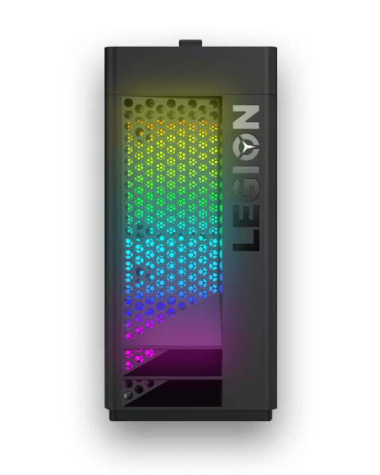
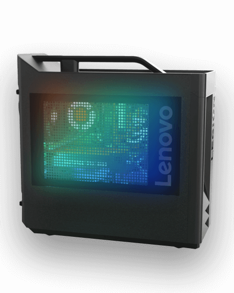

<div class="ui-lighting-profile">
  <div class="d-flex justify-content-around">
      <vtr-ui-lighting-profile-toggle (setDefaultProfile)="setDefaultProfile($event)" [currentProfile]="currentProfile"></vtr-ui-lighting-profile-toggle>
      <vtr-ui-brightness-slider [lightingData]="lightingData"></vtr-ui-brightness-slider>
  </div>


  <div class="lighting-area">
    <div class="d-flex">
      <div class="gaming-device-image d-flex align-items-center">
        
      </div>
      <div class="gaming-light-options">
        <!-- <div class="light-option one-light only-blink">
          <vtr-ui-lighting-single-color></vtr-ui-lighting-single-color>
		</div> -->
		<div *ngIf="isProfileOff" class="light-option lighting-off d-flex justify-content-center align-items-center">
				<p>Lighting are currently off. Select the profile tab above to turn it on and customize it.</p>>
				</div>
        <div  *ngIf="!isProfileOff" class="light-option rgb-color one-light">
          <h2 class="main-title">Front Light</h2>
          <h3 class="content-title">Effect </h3>

          <vtr-ui-lighting-effect [options]="options.drop[0]"
          (change)="optionChanged($event,item)"></vtr-ui-lighting-effect>
          <h3 class="content-title">Color</h3>
          <vtr-ui-lighting-color-wheel></vtr-ui-lighting-color-wheel>
        </div>
      </div>
    </div>
  </div>

  <div class="lighting-area">
    <div class="d-flex">
      <div class="gaming-device-image d-flex align-items-center">
        
      </div>
      <div class="gaming-light-options">
        <div class="light-option rgb-color one-light">
          <h2 class="main-title">Side Light</h2>
          <h3 class="content-title">Effect</h3>
          <vtr-ui-lighting-effect [options]="options.drop[1]"
          (change)="optionChanged($event,item)"></vtr-ui-lighting-effect>
          <h3 class="content-title">Color</h3>
          <vtr-ui-lighting-color-wheel></vtr-ui-lighting-color-wheel>
        </div>
      </div>
    </div>
  </div>
  <div class="footer-part d-flex flex-row-reverse">
      <a href="javascript:void(0);" class="link" (click)="setDeafultLightingSettings($event)">Set to default</a>
  </div>

</div>
